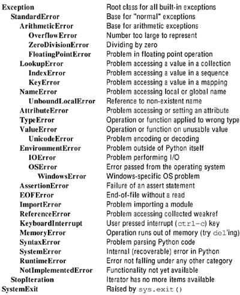

| [ Team LiB ] |
|
1.2 Standard ModulesThere are a variety of tasks that many or most text processing applications will perform, but that are not themselves text processing tasks. For example, texts typically live inside files, so for a concrete application you might want to check whether files exist, whether you have access to them, and whether they have certain attributes; you might also want to read their contents. The text processing per se does not happen until the text makes it into a Python value, but getting the text into local memory is a necessary step. Another task is making Python objects persistent so that final or intermediate processing results can be saved in computer-usable forms. Or again, Python applications often benefit from being able to call external processes and possibly work with the results of those calls. Yet another class of modules helps you deal with Python internals in ways that go beyond what the inherent syntax does. I have made a judgment call in this book as to which such "Python internal" modules are sufficiently general and frequently used in text processing applications; a number of "internal" modules are given only one-line descriptions under the "Other Modules" topic. 1.2.1 Working with the Python InterpreterSome of the modules in the standard library contain functionality that is nearly as important to Python as the basic syntax. Such modularity is an important strength of Python's design, but users of other languages may be surprised to find capabilities for reading command-line arguments, catching exceptions, copying objects, or the like in external modules.
Names in Python programs are merely bindings to underlying objects; many of these objects are mutable. This point is simple, but it winds up biting almost every beginning Python programmer—and even a few experienced Pythoners get caught, too. The problem is that binding another name (including a sequence position, dictionary entry, or attribute) to an object leaves you with two names bound to the same object. If you change the underlying object using one name, the other name also points to a changed object. Sometimes you want that, sometimes you do not. One variant of the binding trap is a particularly frequent pitfall. Say you want a 2D table of values, initialized as zeros. Later on, you would like to be able to refer to a row/column position as, for example, table[2][3] (as in many programming languages). Here is what you would probably try first, along with its failure: >>> row = [0]*4 >>> print row [0, 0, 0, 0] >>> table = [row]*4 # or 'table = [[0]*4]*4 >>> for row in table: print row ... [0, 0, 0, 0] [0, 0, 0, 0] [0, 0, 0, 0] [0, 0, 0, 0] >>> table[2][3] = 7 >>> for row in table: print row ... [0, 0, 0, 7] [0, 0, 0, 7] [0, 0, 0, 7] [0, 0, 0, 7] >>> id(table[2]), id(table[3]) (6207968, 6207968) The problem with the example is that table is a list of four positional bindings to the exact same list object. You cannot change just one row, since all four point to just one object. What you need instead is a copy of row to put in each row of table. Python provides a number of ways to create copies of objects (and bind them to names). Such a copy is a "snapshot" of the state of the object that can be modified independently of changes to the original. A few ways to correct the table problem are: >>> table1 = map(list, [(0,)*4]*4) >>> id(table1[2]), id(table1[3]) (6361712, 6361808) >>> table2 = [1st[:] for 1st in [[0]*4]*4] >>> id(table2[2]), id(table2[3]) (6356720, 6356800) >>> from copy import copy >>> row = [0]*4 >>> table3 = map(copy, [row]*4) >>> id(table3[2]), id(table3[3]) (6498640, 6498720) In general, slices always create new lists. In Python 2.2+, the constructors list() and dict() likewise construct new/copied lists/dicts (possibly using other sequence or association types as arguments). But the most general way to make a new copy of whatever object you might need is with the copy module. If you use the copy module you do not need to worry about issues of whether a given sequence is a list, or merely list-like, which the list() coercion forces into a list. FUNCTIONScopy.copy(obj)Return a shallow copy of a Python object. Most (but not quite all) types of Python objects can be copied. A shallow copy binds its elements/members to the same objects as bound in the original—but the object itself is distinct. >>> import copy >>> class C: pass ... >>> o1 = C() >>> o1.lst = [1,2,3] >>> o1.str = "spam" >>> o2 = copy.copy(o1) >>> o1.lst.append(17) >>> o2.lst [1, 2, 3, 17] >>> o1.str = 'eggs' >>> o2.str 'spam' copy.deepcopy(obj)Return a deep copy of a Python object. Each element or member in an object is itself recursively copied. For nested containers, it is usually more desirable to perform a deep copy—otherwise you can run into problems like the 2D table example above. >>> o1 = C() >>> o1.lst = [1,2,3] >>> o3 = copy.deepcopy(o1) >>> o1.lst.append(17) >>> o3.lst [1, 2, 3] >>> o1.lst [1, 2, 3, 17]
Various actions in Python raise exceptions, and these exceptions can be caught using an except clause. Although strings can serve as exceptions for backwards-compatibility reasons, it is greatly preferable to use class-based exceptions. When you catch an exception in using an except clause, you also catch any descendent exceptions. By utilizing a hierarchy of standard and user-defined exception classes, you can tailor exception handling to meet your specific code requirements. >>> class MyException(StandardError): pass ... >>> try: ... raise MyException ... except StandardError: ... print "Caught parent" ... except MyException: ... print "Caught specific class" ... except: ... print "Caught generic leftover" ... Caught parent In general, if you need to raise exceptions manually, you should either use a built-in exception close to your situation, or inherit from that built-in exception. The outline in Figure 1.1 shows the exception classes defined in exceptions. Figure 1.1. Standard exceptions
Utility applications—whether for text processing or otherwise—frequently accept a variety of command-line switches to configure their behavior. In principle, and frequently in practice, all that you need to do to process command-line options is read through the list sys.argv[1:] and handle each element of the option line. I have certainly written my own small "sys.argv parser" more than once; it is not hard if you do not expect too much. The getopt module provides some automation and error handling for option parsing. It takes just a few lines of code to tell getopt what options it should handle, and which switch prefixes and parameter styles to use. However, getopt is not necessarily the final word in parsing command lines. Python 2.3 includes Greg Ward's optik module <http://optik.sourceforge.net/> renamed as optparse, and the Twisted Matrix library contains twisted.python.usage <http://www.twistedmatrix.com/documents/howto/options>. These modules, and other third-party tools, were written because of perceived limitations in getopt. For most purposes, getopt is a perfectly good tool. Moreover, even if some enhanced module is included in later Python versions, either this enhancement will be backwards compatible or getopt will remain in the distribution to support existing scripts. SEE ALSO: sys.argv 49; FUNCTIONSgetopt.getopt(args, options [,long_options]])The argument args is the actual list of options being parsed, most commonly sys.argv[1:]. The argument options and the optional argument long_options contain formats for acceptable options. If any options specified in args do not match any acceptable format, a getopt.GetoptError exception is raised. All options must begin with either a single dash for single-letter options or a double dash for long options (DOS-style leading slashes are not usable, unfortunately). The return value of getopt.getopt() is a pair containing an option list and a list of additional arguments. The latter is typically a list of filenames the utility will operate on. The option list is a list of pairs of the form (option, value). Under recent versions of Python, you can convert an option list to a dictionary with dict(optlist), which is likely to be useful. The options format string is a sequence of letters, each optionally followed by a colon. Any option letter followed by a colon takes a (mandatory) value after the option. The format for long_options is a list of strings indicating the option names (excluding the leading dashes). If an option name ends with an equal sign, it requires a value after the option. It is easiest to see getopt in action:
>>> import getopt
>>> opts='-al -b -c 2 --foo=bar --baz file1 file2'.split()
>>> optlist, args = getopt.getopt(opts,'a:bc:',['foo=','baz'])
>>> optlist
[('-a', '1'), ('-b', ''), ('-c', '2'), ('--foo', 'bar'),
('--baz', '')]
>>> args
['file1', 'file2']
>>> nodash = lambda s: \
... s.translate(''.join(map(chr,range(256))),'-')
>>> todict = lambda 1: \
... dict([(nodash(opt),val) for opt,val in 1])
>>> optdict = todict(optlist)
>>> optdict
{'a': '1', 'c': '2', 'b': '', 'baz': '', 'foo': 'bar'}
You can examine options given either by looping through optlist or by performing optdict.get(key, default) type tests as needed in your program flow.
All of the standard Python syntactic operators are available in functional form using the operator module. In most cases, it is more clear to use the actual operators, but in a few cases functions are useful. The most common usage for operator is in conjunction with functional programming constructs. For example: >>> import operator >>> 1st = [1, 0, (), '', 'abc'] >>> map(operator.not_, 1st) # fp-style negated bool vals [0, 1, 1, 1, 0] >>> tmplst = [] # imperative style >>> for item in 1st: ... tmplst.append(not item) ... >>> tmplst [0, 1, 1, 1, 0] >>> del tmplst # must cleanup stray name As well as being shorter, I find the FP style more clear. The source code below provides sample implementations of the functions in the operator module. The actual implementations are faster and are written directly in C, but the samples illustrate what each function does. operator2.py
### Comparison functions
It = __lt__ = lambda a,b: a < b
le = __le__ = lambda a,b: a <= b
eq = __eq__ = lambda a,b: a == b
ne = __ne__ = lambda a,b: a != b
ge = __ge__ = lambda a,b: a >= b
gt = __gt__ = lambda a,b: a > b
### Boolean functions
not_ = __not__ = lambda o: not o
truth = lambda o: not not o
# Arithmetic functions
abs = __abs__ = abs # same as built-in function
add = __add__ = lambda a,b: a + b
and_ = __and__ = lambda a,b: a & b # bitwise, not boolean
div = __div__ = \
lambda a,b: a/b # depends on __future__.division
floordiv = __floordiv__ = lambda a,b: a/b # Only for 2.2+
inv = invert = __inv__ = __invert__ = lambda o: ~o
lshift = __lshift__ = lambda a,b: a << b
rshift = __rshift__ = lambda a,b: a << b
mod = __mod__ = lambda a,b: a % b
mul = __mul__ = lambda a,b: a * b
neg = __neg__ = lambda o: -o
or_ = __or__ = lambda a,b: a | b # bitwise, not boolean
pos = __pos__ = lambda o: +o # identity for numbers
sub = __sub__ = lambda a,b: a - b
truediv = __truediv__ = lambda a,b: 1.0*a/b # New in 2.2+
xor = __xor__ = lambda a,b: a ^ b
### Sequence functions (note overloaded syntactic operators)
concat = __concat__ = add
contains = __contains__ = lambda a,b: b in a
countOf = lambda seq,a: len([x for x in seq if x==a])
def delitem(seq,a): del seq[a]
__delitem__ = delitem
def delslice(seq,b,e): del seq[b:e]
__delslice__ = delslice
getitem = __getitem__ = lambda seq,i: seq[i]
getslice = __getslice__ = lambda seq,b,e: seq[b:e]
index0f = lambda seq,o: seq.index(o)
repeat = __repeat__ = mul
def setitem(seq,i,v): seq[i] = v
__setitem__ = setitem
def setslice(seq,b,e,v): seq[b:e] = v
__setslice__ = setslice
### Functionality functions (not implemented here)
# The precise interfaces required to pass the below tests
# are ill-defined, and might vary at limit-cases between
# Python versions and custom data types.
import operator
isCallable = callable # just use built-in 'callable()'
isMappingType = operator.isMappingType
isNumberType = operator.isNumberType
isSequenceType = operator.isSequenceType
As with the Python "userland" objects you create within your applications, the Python interpreter itself is very open to introspection. Using the sys module, you can examine and modify many aspects of the Python runtime environment. However, as with much of the functionality in the os module, some of what sys provides is too esoteric to address in this book about text processing. Consult the Python Library Reference for information on those attributes and functions not covered here. The module attributes sys.exc_type, sys.exc_value, and sys.exc_traceback have been deprecated in favor of the function sys.exc_info(). All of these, and also sys.last-type, sys.last-value, sys.last_traceback, and sys.tracebacklimit, let you poke into exceptions and stack frames to a finer degree than the basic try and except statements do. sys.exec_prefix and sys.executable provide information on installed paths for Python. The functions sys.displayhook() and sys.excepthook() control where program output goes, and sys.__displayhook__ and sys.__excepthook__ retain their original values (e.g., STDOUT and STDERR). sys.exitfunc affects interpreter cleanup. The attributes sys.ps1 and sys.ps2 control prompts in the Python interactive shell. Other attributes and methods simply provide more detail than you almost ever need to know for text processing applications. The attributes sys.dllhandle and sys.winver are Windows specific; sys.setdlopenf lags (), and sys.getdlopenflags() are Unix only. Methods like sys.builtin_module_names, sys._getframe(), sys.prefix, sys.getrecursionlimit(), sys.setprofile(), sys.settrace(), sys.setcheckinterval(), sys.setrecursionlimit(), sys.modules, and also sys.warnoptions concern Python internals. Unicode behavior is affected by the sys.setdefaultencoding() method, but is overridable with arguments anyway. ATTRIBUTESsys.argvA list of command-line arguments passed to a Python script. The first item, argv[0], is the script name itself, so you are normally interested in argv[1:] when parsing arguments. SEE ALSO: getopt 44; sys.stdin 51; sys.stdout 51; sys.byteorderThe native byte order (endianness) of the current platform. Possible values are big and little. Available in Python 2.0+. sys.copyrightA string with copyright information for the current Python interpreter. sys.hexversionThe version number of the current Python interpreter as an integer. This number increases with every version, even nonproduction releases. This attribute is not very human-readable; sys.version or sys.version_info is generally easier to work with. SEE ALSO: sys.version 51; sys.version_info 52; sys.maxintThe largest positive integer supported by Python's regular integer type, on most platforms, 2**31-1. The largest negative integer is -sys.maxint-1. sys.maxunicodeThe integer of the largest supported code point for a Unicode character under the current configuration. Unicode characters are stored as UCS-2 or UCS-4. sys.pathA list of the pathnames searched for modules. You may modify this path to control module loading. sys.platformA string identifying the OS platform. SEE ALSO: os.uname() 81; sys.stderr
|
|
types • Standard Python object types |
Every object in Python has a type; you can find it by using the built-in function type(). Often Python functions use a sort of ad hoc overloading, which is implemented by checking features of objects passed as arguments. Programmers coming from languages like C or Java are sometimes surprised by this style, since they are accustomed to seeing multiple "type signatures" for each set of argument types the function can accept. But that is not the Python way.
Experienced Python programmers try not to rely on the precise types of objects, not even in an inheritance sense. This attitude is also sometimes surprising to programmers of other languages (especially statically typed). What is usually important to a Python program is what an object can do, not what it is. In fact, it has become much more complicated to describe what many objects are with the "type/class unification" in Python 2.2 and above (the details are outside the scope of this book).
For example, you might be inclined to write an overloaded function in the following manner:
import types, exceptions
def overloaded_get_text(o):
if type(o) is types.FileType:
text = o.read()
elif type(o) is types.StringType:
text = o
elif type(o) in (types.IntType, types.FloatType,
types.LongType, types.ComplexType):
text = repr(o)
else:
raise exceptions.TypeError
return text
The problem with this rigidly typed code is that it is far more fragile than is necessary. Something need not be an actual FileType to read its text, it just needs to be sufficiently "file-like" (e.g., a urllib.urlopen() or cStringIO.StringIO() object is file-like enough for this purpose). Similarly, a new-style object that descends from types.StringType or a UserString.UserString() object is "string-like" enough to return as such, and similarly for other numeric types.
A better implementation of the function above is:
def overloaded_get_text(o):
if hasattr(o,'read'):
return o.read()
try:
return ""+o
except TypeError:
pass
try:
return repr(0+o)
except TypeError:
pass
raise
At times, nonetheless, it is useful to have symbolic names available to name specific object types. In many such cases, an empty or minimal version of the type of object may be used in conjunction with the type() function equally well—the choice is mostly stylistic:
>>> type('') == types.StringType
1
>>> type(0.0) == types.FloatType
1
>>> type(None) == types.NoneType
1
>>> type([]) == types.ListType
1
Return the datatype of any object o. The return value of this function is itself an object of the type types.TypeType. TypeType objects implement .__str__() and .__repr__() methods to create readable descriptions of object types.
>>> print type(1) <type 'int'> >>> print type(type(1)) <type 'type'> >>> type(1) is type(0) 1
The type for built-in functions like abs(), len(), and dir(), and for functions in "standard" C extensions like sys and os. However, extensions like string and re are actually Python wrappers for C extensions, so their functions are of type types.FuntionType. A general Python programmer need not worry about these fussy details.
The type for objects created by the built-in buffer() function.
The type for user-defined classes.
>>> from operator import eq >>> from types import * >>> map(eq, [type(C), type(C()), type(C().foo)], ... [ClassType, InstanceType, MethodType]) [1, 1, 1]
SEE ALSO: types.InstanceType 56; types.MethodType 56;
The type for code objects such as returned by compile().
Same as type(0+0j).
Same as type({}).
The type for built-in Ellipsis object.
The type for open file objects.
>>> from sys import stdout
>>> fp = open('tst','w')
>>> [type(stdout), type(fp)] == [types.FileType]*2
1
Same as type (0.0).
The type for frame objects such as tb.tb_frame in which tb has the type types.TracebackType.
Same as type(lambda:0).
The type for generator-iterator objects in Python 2.2+.
>>> from __future__ import generators >>> def foo(): yield 0 ... >>> type(foo) == types.FunctionType 1 >>> type(foo()) == types.GeneratorType 1
SEE ALSO: types.FunctionType 56;
The type for instances of user-defined classes.
SEE ALSO: types.ClassType 55; types.MethodType 56;
Same as type(0).
Same as type().
Same as type(OL).
The type for methods of user-defined class instances.
SEE ALSO: types.ClassType 55; types.InstanceType 56;
The type for modules.
>>> import os, re, sys >>> [type(os), type(re), type(sys)] == [types.ModuleType]*3 1
Same as type(None).
Same as type("").
The type for traceback objects found in sys.exc_traceback.
Same as type(()).
Same as type(u"").
The type for objects returned by slice().
Same as (types.StringType,types.UnicodeType).
SEE ALSO: types.StringType 57; types.UnicodeType 57;
Same as type (type (obj)) (for any obj).
Same as type(xrange(1)).
|
dircache • Read and cache directory listings |
The dircache module is an enhanced version of the os.listdir() function. Unlike the os function, dircache keeps prior directory listings in memory to avoid the need for a new call to the filesystem. Since dircache is smart enough to check whether a directory has been touched since last caching, dircache is a complete replacement for os.listdir() (with possible minor speed gains).
Return a directory listing of path path. Uses a list cached in memory where possible.
Identical to dircache.listdir(). Legacy function to support old scripts.
Modify the list lst in place to indicate which items are directories, and which are plain files. The string path should indicate the path to reach the listed files.
>>> l = dircache.listdir('/tmp')
>>> l
['501', 'md10834.db']
>>> dircache.annotate('/tmp', l)
>>> l
['501/', 'md10834.db']
|
filecmp • Compare files and directories |
The filecmp module lets you check whether two files are identical, and whether two directories contain some identical files. You have several options in determining how thorough of a comparison is performed.
Compare the file named by the string fname1 with the file named by the string fname2. If the default true value of shallow is used, the comparison is based only on the mode, size, and modification time of the two files. If shallow is a false value, the files are compared byte by byte. Unless you are concerned that someone will deliberately falsify timestamps on files (as in a cryptography context), a shallow comparison is quite reliable. However, tar and untar can also change timestamps.
>>> import filecmp
>>> filecmp.cmp('dir1/file1', 'dir2/file1')
0
>>> filecmp.cmp('dir1/file2', 'dir2/file2', shallow=0)
1
The use_statcache argument is not relevant for Python 2.2+. In older Python versions, the statcache module provided (slightly) more efficient cached access to file stats, but its use is no longer needed.
Compare those filenames listed in fnamelist if they occur in both the directory dirname1 and the directory dirname2. filecmp.cmpfiles() returns a tuple of three lists (some of the lists may be empty): (matches, mismatches, errors). matches are identical files in both directories, mismatches are nonidentical files in both directories. errors will contain names if a file exists in neither, or in only one, of the two directories, or if either file cannot be read for any reason (permissions, disk problems, etc.).
>>> import filecmp, os
>>> filecmp.cmpfiles('dirl','dir2',['this','that','other'])
(['this'], ['that'], ['other'])
>>> print os.popen('ls -l dir1').read()
-rwxr-xr-x 1 quilty staff 169 Sep 27 00:13 this
-rwxr-xr-x 1 quilty staff 687 Sep 27 00:13 that
-rwxr-xr-x 1 quilty staff 737 Sep 27 00:16 other
-rwxr-xr-x 1 quilty staff 518 Sep 12 11:57 spam
>>> print os.popen('ls -l dir2').read()
-rwxr-xr-x 1 quilty staff 169 Sep 27 00:13 this
-rwxr-xr-x 1 quilty staff 692 Sep 27 00:32 that
The shallow and use_statcache arguments are the same as those to filecmp.cmp().
Create a directory comparison object. dirname1 and dirname2 are two directories to compare. The optional argument ignore is a sequence of pathnames to ignore and defaults to ["RCS","CVS","tags"]; hide is a sequence of pathnames to hide and defaults to [os.curdir,os.pardir] (i.e., [".",".."]).
The attributes of filecmp.dircmp are read-only. Do not attempt to modify them.
Print a comparison report on the two directories.
>>> mycmp = filecmp.dircmp('dir1','dir2')
>>> mycmp.report()
diff dir1 dir2
Only in dir1 : ['other', 'spam']
Identical files : ['this']
Differing files : ['that']
Print a comparison report on the two directories, including immediate subdirectories. The method name has nothing to do with the theoretical term "closure" from functional programming.
Print a comparison report on the two directories, recursively including all nested subdirectories.
Pathnames in the dirname1 directory, filtering out the hide and ignore lists.
Pathnames in the dirname2 directory, filtering out the hide and ignore lists.
Pathnames in both directories.
Pathnames in dirname 1 but not dirname2.
Pathnames in dirname2 but not dirname1.
Subdirectories in both directories.
Filenames in both directories.
Pathnames in both directories, but of different types.
Filenames of identical files in both directories.
Filenames of nonidentical files whose name occurs in both directories.
Filenames in both directories where something goes wrong during comparison.
A dictionary mapping filecmp.dircmp.common_dirs strings to corresponding filecmp.dircmp objects; for example:
>>> usercmp = filecmp.dircmp('/Users/quilty','/Users/dqm')
>>> usercmp.subdirs['Public'].common
['Drop Box']
SEE ALSO: os.stat() 79; os.listdir() 76;
|
flleinput • Read multiple files or STDIN |
Many utilities, especially on Unix-like systems, operate line-by-line on one or more files and/or on redirected input. A flexibility in treating input sources in a homogeneous fashion is part of the "Unix philosophy." The fileinput module allows you to write a Python application that uses these common conventions with almost no special programming to adjust to input sources.
A common, minimal, but extremely useful Unix utility is cat, which simply writes its input to STDOUT (allowing redirection of STDOUT as needed). Below are a few simple examples of cat:
% cat a AAAAA % cat a b AAAAA BBBBB % cat - b < a AAAAA BBBBB % cat < b BBBBB % cat a < b AAAAA % echo "XXX" | cat a - AAAAA XXX
Notice that STDIN is read only if either "-" is given as an argument, or no arguments are given at all. We can implement a Python version of cat using the fileinput module as follows:
#!/usr/bin/env python
import fileinput
for line in fileinput.input():
print line,
Most commonly, this function will be used without any of its optional arguments, as in the introductory example of cat.py. However, behavior may be customized for special cases.
The argument files is a sequence of filenames to process. By default, it consists of all the arguments given on the command line. Commonly, however, you might want to treat some of these arguments as flags rather than filenames (e.g., if they start with - or /). Any list of filenames you like may be used as the files argument, whether or not it is built from sys.argv.
If you specify a true value for inplace, output will go into each file specified rather than to STDOUT. Input taken from STDIN, however, will still go to STDOUT. For in-place operation, a temporary backup file is created as the actual input source and is given the extension indicated by the backup argument. For example:
% cat a b
AAAAA
BBBBB
% cat modify.py
#!/usr/bin/env python
import fileinput, sys
for line in fileinput.input(sys.argv[1:], inplace=1):
print "MODIFIED", line,
% echo "XXX" | ./modify.py a b -
MODIFIED XXX
% cat a b
MODIFIED AAAAA
MODIFIED BBBBB
Close the input sequence.
Close the current file, and proceed to the next one. Any unread lines in the current file will not be counted towards the line total.
There are several functions in the fileinput module that provide information about the current input state. These tests can be used to process the current line in a context-dependent way.
The number of lines read from the current file.
The name of the file from which the last line was read. Before a line is read, the function returns None.
Same as fileinput.filelineno()==1.
True if the last line read was from STDIN.
The number of lines read during the input loop, cumulative between files.
The methods of fileinput.FileInput are the same as the module-level functions, plus an additional .readline() method that matches that of file objects. fileinput.FileInput objects also have a .__getitem__() method to support sequential access.
The arguments to initialize a fileinput.FileInput object are the same as those passed to the fileinput.input () function. The class exists primarily in order to allow subclassing. For normal usage, it is best to just use the fileinput functions.
SEE ALSO: multifile 285; xreadlines 72;
|
glob • Filename globing utility |
The glob module provides a list of pathnames matching a glob-style pattern. The fnmatch module is used internally to determine whether a path matches.
Both directories and plain files are returned, so if you are only interested in one type of path, use os.path.isdir() or os.path.isfile(); other functions in os.path also support other filters.
Pathnames returned by glob.glob() contain as much absolute or relative path information as the pattern pat gives. For example:
>>> import glob, os.path
>>> glob.glob('/Users/quilty/Book/chap[3-4].txt')
['/Users/quilty/Book/chap3.txt', '/Users/quilty/Book/chap4.txt']
>>> glob.glob('chap[3-6].txt')
['chap3.txt', 'chap4.txt', 'chap5.txt', 'chap6.txt']
>>> filter(os.path.isdir, glob.glob('/Users/quilty/Book/[A-Z]*'))
['/Users/quilty/Book/SCRIPTS', '/Users/quilty/Book/XML']
SEE ALSO: fnmatch 232; os.path 65;
|
linecache • Cache lines from files |
The module linecache can be used to simulate relatively efficient random access to the lines in a file. Lines that are read are cached for later access.
Read line linenum from the file named fname. If an error occurs reading the line, the function will catch the error and return an empty string. sys.path is also searched for the filename if it is not found in the current directory.
>>> import linecache
>>> linecache.getline('/etc/hosts', 15)
'192.168.1.108 hermes hermes.gnosis.lan\n'
Clear the cache of read lines.
Check whether files in the cache have been modified since they were cached.
|
os.path • Common pathname manipulations |
The os.path module provides a variety of functions to analyze and manipulate filesystem paths in a cross-platform fashion.
Return an absolute path for a (relative) pathname.
>>> os.path.abspath('SCRIPTS/mk_book')
'/Users/quilty/Book/SCRIPTS/mk_book'
Same as os.path.split(pathname)[1].
Return the path to the most nested parent directory shared by all elements of the sequence pathlist.
>>> os.path.commonprefix(['/usr/X11R6/bin/twm', ... '/usr/sbin/bash', ... '/usr/local/bin/dada']) '/usr/'
Same as os.path.split(pathname)[0].
Return true if the pathname pathname exists.
Expand pathnames that include the tilde character: ~. Under standard Unix shells, an initial tilde refers to a user's home directory, and a tilde followed by a name refers to the named user's home directory. This function emulates that behavior on other platforms.
>>> os.path.expanduser('~dqm')
'/Users/dqm'
>>> os.path.expanduser('~/Book')
'/Users/quilty/Book'
Expand pathname by replacing environment variables in a Unix shell style. While this function is in the os.path module, you could equally use it for bash-like scripting in Python, generally (this is not necessarily a good idea, but it is possible).
>>> os.path.expandvars('$HOME/Book')
'/Users/quilty/Book'
>>> from os.path import expandvars as ev # Python 2.0+
>>> if ev('$HOSTTYPE')=='macintosh' and ev('$OSTYPE')=='darwin':
... print ev("The vendor is $VENDOR, the CPU is $MACHTYPE")
...
The vendor is apple, the CPU is powerpc
Return the last access time of pathname (or raise os.error if checking is not possible).
Return the modification time of pathname (or raise os.error if checking is not possible).
Return the size of pathname in bytes (or raise os.error if checking is not possible).
Return true if pathname is an absolute path.
Return true if pathname is a directory.
Return true if pathname is a regular file (including symbolic links).
Return true if pathname is a symbolic link.
Return true if pathname is a mount point (on POSIX systems).
Join multiple path components intelligently.
>>> os.path.join('/Users/quilty/','Book','SCRIPTS/','mk_book')
'/Users/quilty/Book/SCRIPTS/mk_book'
Convert pathname to canonical lowercase on case-insensitive filesystems. Also convert slashes on Windows systems.
Remove redundant path information.
>>> os.path.normpath('/usr/local/bin/../include/./slang.h')
'/usr/local/include/slang.h'
Return the "real" path to pathname after de-aliasing any symbolic links. New in Python 2.2+.
>>> os.path.realpath('/usr/bin/newaliases')
'/usr/sbin/sendmail'
Return true if pathname1 and pathname2 are the same file.
SEE ALSO: filecmp 58;
Return true if the file handles fp1 and fp2 refer to the same file. Not available on Windows.
Return a tuple containing the path leading up to the named pathname and the named directory or filename in isolation.
>>> os.path.split('/Users/quilty/Book/SCRIPTS')
('/Users/quilty/Book', 'SCRIPTS')
Return a tuple containing the drive letter and the rest of the path. On systems that do not use a drive letter, the drive letter is empty (as it is where none is specified on Windows-like systems).
For every directory recursively contained in pathname, call visitfunc (arg, dirname, pathnames) for each path.
>>> def big_files(minsize, dirname, files):
... for file in files:
... fullname = os.path.join(dirname,file)
... if os.path.isfile(fullname):
... if os.path.getsize(fullname) >= minsize:
... print fullname
...
>>> os.path.walk('/usr/', big_files, 5e6)
/usr/lib/libSystem.B_debug.dylib
/usr/lib/libSystem.B_profile.dylib
|
shutil • Copy files and directory trees |
The functions in the shutil module make working with files a bit easier. There is nothing in this module that you could not do using basic file objects and os.path functions, but shutil often provides a more direct means and handles minor details for you. The functions in shutil match fairly closely the capabilities you would find in Unix filesystem utilities like cp and rm.
Copy the file named src to the pathname dst. If dst is a directory, the created file is given the name os.path.join(dst+os.path.basename(src)).
SEE ALSO: os.path.join() 66; os.path.basename() 65;
Same as shutil.copy() except that the access and creation time of dst are set to the values in src.
Copy the file named src to the filename dst (overwriting dst if present). Basically, this has the same effect as open(dst,"wb").write(open(src,"rb").read()).
Copy the file-like object fpsrc to the file-like object fpdst. If the optional argument buffer is given, only the specified number of bytes are read into memory at a time; this allows copying very large files.
Copy the permission bits from the file named src to the filename dst.
Copy the permission and timestamp data from the file named src to the filename dst.
Copy the directory src to the destination dst recursively. If the optional argument symlinks is a true value, copy symbolic links as links rather than the default behavior of copying the content of the link target. This function may not be entirely reliable on every platform and filesystem.
Remove an entire directory tree rooted at dirname. If optional argument ignore is a true value, errors will be silently ignored. If errorhandler is given, a custom error handler is used to catch errors. This function may not be entirely reliable on every platform and filesystem.
SEE ALSO: open() 15; os.path 65;
|
stat • Constants/functions for os.stat() |
The stat module provides two types of support for analyzing the results of os.stat(), os.lstat(), and os.fstat() calls.
Several functions exist to allow you to perform tests on a file. If you simply wish to check one predicate of a file, it is more direct to use one of the os.path.is*() functions, but for performing several such tests, it is faster to read the mode once and perform several stat.S_*() tests.
As well as helper functions, stat defines symbolic constants to access the fields of the 10-tuple returned by os.stat() and friends. For example:
>>> from stat import *
>>> import os
>>> fileinfo = os.stat('chap1.txt')
>>> fileinfo[ST_SIZE]
68666L
>>> mode = fileinfo [ST_MODE]
>>> S_ISSOCK(mode)
0
>>> S_ISDIR(mode)
0
>>> S_ISREG(mode)
1
Mode indicates a directory.
Mode indicates a character special device file.
Mode indicates a block special device file.
Mode indicates a regular file.
Mode indicates a FIFO (named pipe).
Mode indicates a symbolic link.
Mode indicates a socket.
I-node protection mode.
I-node number.
Device.
Number of links to this i-node.
User id of file owner.
Group id of file owner.
Size of file.
Last access time.
Modification time.
Time of last status change.
|
tempfile • Temporary files and filenames |
The tempfile module is useful when you need to store transient data using a file-like interface. In contrast to the file-like interface of StringIO, tempfile uses the actual filesystem for storage rather than simulating the interface to a file in memory. In memory-constrained contexts, therefore, tempfile is preferable.
The temporary files created by tempfile are as secure against external modification as is supported by the underlying platform. You can be fairly confident that your temporary data will not be read or changed either while your program is running or afterwards (temporary files are deleted when closed). While you should not count on tempfile to provide you with cryptographic-level security, it is good enough to prevent accidents and casual inspection.
Return an absolute path to a unique temporary filename. If optional argument suffix is specified, the name will end with the suffix string.
Return a temporary file object. In general, there is little reason to change the default mode argument of w+b; there is no existing file to append to before the creation, and it does little good to write temporary data you cannot read. Likewise, the optional suffix argument generally will not ever be visible, since the file is deleted when closed. The default buffsize uses the platform defaults, but may be modified if needed.
>>> tmpfp = tempfile.TemporaryFile()
>>> tmpfp.write('this and that\n')
>>> tmpfp.write('something else\n')
>>> tmpfp.tell()
29L
>>> tmpfp.seek(0)
>>> tmpfp.read()
'this and that\nsomething else\n'
SEE ALSO: StringIO 153; cStringIO 153;
|
xreadlines • Efficient iteration over a file |
Reading over the lines of a file had some pitfalls in older versions of Python: There was a memory-friendly way, and there was a fast way, but never the twain shall meet. These techniques were:
>>> fp = open('bigfile')
>>> line = fp.readline()
>>> while line:
... # Memory-friendly but slow
... # ...do stuff...
... line = fp.readline()
>>> for line in open('bigfile').readlines():
... # Fast but memory-hungry
... # ...do stuff...
Fortunately, with Python 2.1 a more efficient technique was provided. In Python 2.2+, this efficient technique was also wrapped into a more elegant syntactic form (in keeping with the new iterator). With Python 2.3+, xreadlines is officially deprecated in favor of the idiom "for line in file:".
Iterate over the lines of file object fp in an efficient way (both speed-wise and in memory usage).
>>> for line in xreadlines.xreadlines(open('tmp')):
... # Efficient all around
... # ...do stuff...
Corresponding to this xreadlines module function is the .xreadlines() method of file objects.
>>> for line in open('tmp').xreadlines():
... # As a file object method
... # ...do stuff...
If you use Python 2.2 or above, an even nicer version is available:
>>> for line in open('tmp'):
... # ...do stuff...
SEE ALSO: linecache 64; FILE.xreadlines() 17; os.tmpfile() 80;
|
commands • Quick access to external commands |
The commands module exists primarily as a convenience wrapper for calls to os.popen*() functions on Unix-like systems. STDERR is combined with STDOUT in the results.
Return the output from running cmd. This function could also be implemented as:
>>> def getoutput(cmd):
... import os
... return os.popen('{ '+cmd+'; } 2>&1').read()
Return a tuple containing the exit status and output from running cmd. This function could also be implemented as:
>>> def getstatusoutput(cmd):
... import os
... fp = os.popen('{ '+cmd+'; } 2>&1')
... output = fp.read()
... status = fp.close()
... if not status: status=0 # Want zero rather than None
... return (status, output)
...
>>> getstatusoutput('ls nosuchfile')
(256, 'ls: nosuchfile: No such file or directory\n')
>>> getstatusoutput('ls c*[1-3].txt')
(0, 'chap1.txt\nchap2.txt\nchap3.txt\n')
Same as commands.getoutput('ls -ld '+filename).
SEE ALSO: os.popen() 77; os.popen2() 77; os.popen3() 78; os.popen4() 78;
|
os • Portable operating system services |
The os module contains a large number of functions, attributes, and constants for calling on or determining features of the operating system that Python runs on. In many cases, functions in os are internally implemented using modules like posix, os2, riscos, or mac, but for portability it is better to use the os module.
Not everything in the os module is documented in this book. You can read about those features that are unlikely to be used in text processing applications in the Python Library Reference that accompanies Python distributions.
Functions and constants not documented here fall into several categories. The functions and attributes os.confstr(), os.confstr_names, os.sysconf(), and os.sysconf_names let you probe system configuration. As well, I skip some functions specific to process permissions on Unix-like systems: os.ctermid(), os.getegid(), os.geteuid(), os.getgid(), os.getgroups(), os.getlogin(), os.getpgrp(), os.getppid(), os.getuid(), os.setegid(), os.seteuid(), os.setgid(), os.setgroups(), os.setpgrp(), os.setpgid(), os.setreuid(), os.setregid(), os.setsid(), and os.setuid(uid).
The functions os.abort(), os.exec*(), os._exit(), os.fork(), os.forkpty (), os.plock(), os.spawn*(), os.times(), os.wait(), os.waitpid(), os.WIF*(), os.WEXITSTATUS(), os.WSTOPSIG()', and os.WTERMSIG() and the constants os.P_* and os.WNOHANG all deal with process creation and management. These are not documented in this book, since creating and managing multiple processes is not typically central to text processing tasks. However, I briefly document the basic capabilities in os.kill(), os.nice(), os.startfile(), and os.system() and in the os.popen() family. Some of the omitted functionality can also be found in the commands and sys modules.
A number of functions in the os module allow you to perform low-level I/O using file descriptors. In general, it is simpler to perform I/O using file objects created with the built-in open() function or the os.popen*() family. These file objects provide methods like FILE.readline(), FILE.write(), FILE.seek(), and FILE.close() . Information about files can be determined using the os.stat() function or functions in the os.path and shutil modules. Therefore, the functions os.close(), os.dup(), os.dup2(), os.fpathconf(), os.fstat(), os.fstatvfs(), os.ftruncate(), os.isatty(), os.lseek(), os.open(), os.openpty(), os.pathconf(), os.pipe(), os.read(), os.statvfs(), os.tcgetpgrp(), os.tcsetpgrp(), os.ttyname(), os.umask(), and os.write() are not covered here. As well, the supporting constants os.0_* and os.pathconf_names are omitted.
SEE ALSO: commands 73; os.path 65; shutil 68; sys 49;
Check the permission for the file or directory pathname. If the type of operation specified is allowed, return a true value. The argument operation is a number between 0 and 7, inclusive, and encodes four features: exists, executable, writable, and readable. These features have symbolic names:
>>> import os >>> os.F_OK, os.X_OK, os.W_OK, os.R_OK (0, 1, 2, 4)
To query a specific combination of features, you may add or bitwise-or the individual features.
>>> os.access('myfile', os.W_OK | os.R_OK)
1
>>> os.access('myfile', os.X_OK + os.R_OK)
0
>>> os.access('myfile', 6)
1
Change the current working directory to the path pathname.
SEE ALSO: os.getcwd() 75;
Change the mode of file or directory pathname to numeric mode mode. See the man page for the chmod utility for more information on modes.
Change the owner and group of file or directory pathname to uid and gid respectively. See the man page for the chown utility for more information.
Change the root directory under Unix-like systems (on Python 2.2+). See the man page for the chroot utility for more information.
Return the current working directory as a string.
>>> os.getcwd() '/Users/quilty/Book'
SEE ALSO: os.chdir() 75;
Return the value of environment variable var. If the environment variable is not defined, return value. An equivalent call is os. environ.get(var, value).
SEE ALSO: os.environ 81; os.putenv() 78;
Return the current process id. Possibly useful for calls to external utilities that use process id's.
SEE ALSO: os.kill() 76;
Kill an external process on Unix-like systems. You will need to determine values for the pid argument by some means, such as a call to the ps utility. Values for the signal sig sent to the process may be found in the signal module or with man signal. For example:
>>> from signal import *
>>> SIGHUP, SIGINT, SIGQUIT, SIGIOT, SIGKILL
(1, 2, 3, 6, 9)
>>> def kill_by_name(progname):
... pidstr = os.popen('ps|grep '+progname+'|sort').read()
... pid = int(pidstr.split()[0])
... os.kill(pid, 9)
...
>>> kill_by_name('myprog')
Create a hard link from path src to path dst on Unix-like systems. See the man page on the ln utility for more information.
SEE ALSO: os.symlink() 80;
Return a list of the names of files and directories at path pathname. The special entries for the current and parent directories (typically "." and "..") are excluded from the list.
Information on file or directory pathname. See os.stat() for details. os.lstat() does not follow symbolic links.
SEE ALSO: os.stat() 79; stat 69;
Create a directory named pathname with the numeric mode mode. On some operating systems, mode is ignored. See the man page for the chmod utility for more information on modes.
SEE ALSO: os.chmod() 75; os.mkdirs() 77;
Create a directory named pathname with the numeric mode mode. Unlike os.mkdir(), this function will create any intermediate directories needed for a nested directory.
SEE ALSO: os.mkdir() 76;
Create a named pipe on Unix-like systems.
Decrease the process priority of the current application under Unix-like systems. This is useful if you do not wish for your application to hog system CPU resources.
The four functions in the os.popen*() family allow you to run external processes and capture their STDOUT and STDERR and/or set their STDIN. The members of the family differ somewhat in how these three pipes are handled.
Open a pipe to or from the external command cmd. The return value of the function is an open file object connected to the pipe. The mode may be r for read (the default) or w for write. The exit status of the command is returned when the file object is closed. An optional buffer size bufsize may be specified.
>>> import os
>>> def ls(pat):
... stdout = os.popen('ls '+pat)
... result = stdout.read()
... status = stdout.close()
... if status: print "Error status", status
... else: print result
...
>>> ls('nosuchfile')
ls: nosuchfile: No such file or directory
Error status 256
>>> ls('chap[7-9].txt')
chap7.txt
Open both STDIN and STDOUT pipes to the external command cmd. The return value is a pair of file objects connecting to the two respective pipes. mode and bufsize work as with os.popen().
SEE ALSO: os.popen3() 78; os.popen() 77;
Open STDIN, STDOUT, and STDERR pipes to the external command cmd. The return value is a 3-tuple of file objects connecting to the three respective pipes. mode and bufsize work as with os.popen().
>>> import os
>>> stdin, stdout, stderr = os.popen3('sed s/line/LINE/')
>>> print >>stdin, 'line one'
>>> print >>stdin, 'line two'
>>> stdin.write('line three\n)'
>>> stdin.close()
>>> stdout.read()
'LINE one\nLINE two\nLINE three\n'
>>> stderr.read()
''
Open STDIN, STDOUT, and STDERR pipes to the external command cmd. In contrast to os.popen3(), os.popen4() combines STDOUT and STDERR on the same pipe. The return value is a pipe of file objects connecting to the two respective pipes. mode and bufsize work as with os.popen().
SEE ALSO: os.popen3() 78; os.popen() 77;
Set the environment variable var to the value value. Changes to the current environment only affect subprocesses of the current process, such as those launched with os.system() or os.popen(), not the whole OS.
Calls to os.putenv() will update the environment, but not the os.environ variable. Therefore, it is better to update os.environ directly (which also changes the external environment).
SEE ALSO: os.environ 81; os.getenv() 75; os.popen() 77; os.system() 80;
Return a string containing the path symbolic link linkname points to. Works on Unix-like systems.
SEE ALSO: os.symlink() 80;
Remove the file named filename. This function is identical to os.unlink(). If the file cannot be removed, an OSError is raised.
SEE ALSO: os.unlink() 81;
Remove the directory named pathname and any subdirectories of pathname. This function will not remove directories with files, and will raise an OSError if you attempt to do so.
SEE ALSO: os.rmdir() 79;
Rename the file or directory src as dst. Depending on the operating system, the operation may raise an OSError if dst already exists.
SEE ALSO: os.renames() 79;
Rename the file or directory src as dst. Unlike os.rename(), this function will create any intermediate directories needed for a nested directory.
SEE ALSO: os.rename() 79;
Remove the directory named pathname. This function will not remove nonempty directories and will raise an OSError if you attempt to do so.
SEE ALSO: os.removedirs() 79;
Launch an application under Windows system. The behavior is the same as if path was double-clicked in a Drives window or as if you typed start <path> at a command line. Using Windows associations, a data file can be launched in the same manner as an actual executable application.
SEE ALSO: os.system() 80;
Create a stat_result object that contains information on the file or directory pathname. A stat_result object has a number of attributes and also behaves like a tuple of numeric values. Before Python 2.2, only the tuple was provided. The attributes of a stat_result object are named the same as the constants in the stat module, but in lowercase.
>>> import os, stat
>>> file_info = os.stat('chap1.txt')
>>> file_info.st_size
87735L
>>> file_info [stat.ST_SIZE]
87735L
On some platforms, additional attributes are available. For example, Unix-like systems usually have .st_blocks, .st_blksize, and .st_rdev attributes; MacOS has .st_rsize, .st_creator, and .st_type; RISCOS has .st_ftype, .st_attrs, and .st_obtype.
SEE ALSO: stat 69; os.lstat() 76;
Give a description for a numeric error code code, such as that returned by os.popen(bad_cmd).close().
SEE ALSO: os.popen() 77;
Create a soft link from path src to path dst on Unix-like systems. See the man page on the ln utility for more information.
SEE ALSO: os.link() 76; os.readlink() 78;
Execute the command cmd in a subshell. Unlike execution using os.popen() the output of the executed process is not captured (but it may still echo to the same terminal as the current Python application). In some cases, you can use os.system() on non-Windows systems to detach an application in a manner similar to os.startfile() . For example, under MacOSX, you could launch the TextEdit application with:
>>> import os >>> cmd="/Applications/TextEdit.app/Contents/MacOS/TextEdit &" >>> os.system(cmd) 0
SEE ALSO: os.popen() 77; os.startfile() 79; commands 73;
Return a unique filename for a temporary file. If optional argument dir is specified, that directory will be used in the path; if prefix is specified, the file will have the indicated prefix. For most purposes, it is more secure to use os.tmpfile() to directly obtain a file object rather than first generating a name.
SEE ALSO: tempfile 71; os.tmpfile() 80;
Return an "invisible" file object in update mode. This file does not create a directory entry, but simply acts as a transient buffer for data on the filesystem.
SEE ALSO: tempfile 71; StringIO 153; cStringIO 153;
Return detailed information about the current operating system on recent Unix-like systems. The returned 5-tuple contains sysname, nodename, release, version, and machine, each as descriptive strings.
Remove the file named filename. This function is identical to os.remove(). If the file cannot be removed, an OSError is raised.
SEE ALSO: os.remove() 78;
Set the access and modification timestamps of file pathname to the tuple (atime, mtime) specified in times. Alternately, if times is None, set both timestamps to the current time.
SEE ALSO: time 86; os.chmod() 75; os.chown() 75; os.stat() 79;
Usually None, but an alternative path delimiter ("/") under Windows.
The string the operating system uses to refer to the current directory; for example, "." on Unix or ":" on Macintosh (before MacOSX).
The search path used by exec*p*() and spawn*p*() absent a PATH environment variable.
A dictionary-like object containing the current environment.
>>> os.environ['TERM']
'vt100'
>>> os.environ['TERM'] = 'vt220'
>>> os.getenv('TERM')
'vt220'
SEE ALSO: os.getenv() 75; os.putenv() 78;
The string that delimits lines in a file; for example "\n" on Unix, "\r" on Macintosh, "\r\n" on Windows.
A string identifying the operating system the current Python interpreter is running on. Possible strings include posix, nt, dos, mac, os2, ce, java, and riscos.
The string the operating system uses to refer to the parent directory; for example, ".." on Unix or "::" on Macintosh (before MacOSX).
The string that delimits search paths; for example, ";" on Windows or ":" on Unix.
The string the operating system uses to refer to path delimiters; for example "/" on Unix, "\" on Windows, ":" on Macintosh.
SEE ALSO: sys 49; os.path 65;
|
random • Pseudo-random value generator |
Python provides better pseudo-random number generation than do most C libraries with a rand() function, but not good enough for cryptographic purposes. The period of Python's Wichmann-Hill generator is about 7 trillion (7e13), but that merely indicates how long it will take a particular seeded generator to cycle; a different seed will produce a different sequence of numbers. Python 2.3 uses the superior Mersenne Twister generator, which has a longer period and has been better analyzed. For practical purposes, pseudorandom numbers generated by Python are more than adequate for random-seeming behavior in applications.
The underlying pseudo-random numbers generated by the random module can be mapped into a variety of nonuniform patterns and distributions. Moreover, you can capture and tinker with the state of a pseudo-random generator; you can even subclass the random.Random class that operates behind the scenes. However, this latter sort of specialization is outside the scope of this book, and the class random.Random and functions random.getstate(), random.jumpahead(), and random.setstate() are omitted from this discussion. The functions random.whseed() and random.randint() are deprecated.
Return a floating point value in the range [0.0, 1.0) with a beta distribution.
Select a random element from the nonempty sequence seq.
Return a floating point value in the range [mean-arc/2, mean+arc/2) with a circular uniform distribution. Arguments and result are expressed in radians.
Return a floating point value in the range [0.0, +inf) with an exponential distribution. The argument lambda_ gives the inverse of the mean of the distribution.
>>> import random >>> t1,t2 = 0,0 >>> for x in range(100): ... t1 += random.expovariate(1./20) ... t2 += random.expovariate(20.) ... >>> print t1/100, t2/100 18.4021962198 0.0558234063338
Return a floating point value with a gamma distribution (not the gamma function).
Return a floating point value with a Gaussian distribution; the mean is mu and the sigma is sigma. random.gauss() is slightly faster than random.normalvariate().
Return a floating point value with a log normal distribution; the natural logarithm of this distribution is Gaussian with mean mu and sigma sigma.
Return a floating point value with a Gaussian distribution; the mean is mu and the sigma is sigma.
Return a floating point value with a Pareto distribution. alpha specifies the shape parameter.
Return a floating point value in the range [0.0, 1.0).
Return a random element from the specified range. Functionally equivalent to the expression random.choice(range(start,stop,step)), but it does not build the actual range object. Use random.randrange() in place of the deprecated random.randint().
Initialize the Wichmann-Hill generator. You do not necessarily need to call random.seed(), since the current system time is used to initialize the generator upon module import. But if you wish to provide more entropy in the initial state, you may pass any hashable object as argument x. Your best choice for x is a positive long integer less than 27814431486575L, whose value is selected at random by independent means.
Permute the mutable sequence seq in place. An optional argument random may be specified to use an alternate random generator, but it is unlikely you will want to use one. Possible permutations get very big very quickly, so even for moderately sized sequences, not every permutation will occur.
Return a random floating point value in the range [min, max).
Return a floating point value with a von Mises distribution. mu is the mean angle expressed in radians, and kappa is the concentration parameter.
Return a floating point value with a Weibull distribution. alpha is the scale parameter, and beta is the shape parameter.
|
struct • Create and read packed binary strings |
The struct module allows you to encode compactly Python numeric values. This module may also be used to read C structs that use the same formats; some formatting codes are only useful for reading C structs. The exception struct.error is raised if a format does not match its string or values.
A format string consists of a sequence of alphabetic formatting codes. Each code is represented by zero or more bytes in the encoded packed binary string. Each formatting code may be preceded by a number indicating a number of occurrences. The entire format string may be preceded by a global flag. If the flag @ is used, platform-native data sizes and endianness are used. In all other cases, standard data sizes are used. The flag = explicitly indicates platform endianness; < indicates little-endian representations; > or ! indicates big-endian representations.
The available formatting codes are listed below. The standard sizes are given (check your platform for its sizes if platform-native sizes are needed).
x pad byte 0 bytes c char 1 bytes b signed char 1 bytes B unsigned char 1 bytes h short int 2 bytes H unsigned short 2 bytes i int 4 bytes I unsigned int 4 bytes l long int 4 bytes L unsigned long 4 bytes q long long int 8 bytes Q unsigned long long 8 bytes f float 4 bytes d double 8 bytes s string padded to size p Pascal string padded to size P char pointer 4 bytes
Some usage examples clarify the encoding:
>>> import struct
>>> struct.pack('5s5p2c', 'sss','ppp','c','c')
'sss\x00\x00\x03ppp\x00cc'
>>> struct.pack('h', 1)
'\x00\x01'
>>> struct.pack('I', 1)
'\x00\x00\x00\x01'
>>> struct.pack('l', 1)
'\x00\x00\x00\x01'
>>> struct.pack('<l', 1)
'\x01\x00\x00\x00'
>>> struct.pack('f', 1)
'?\x80\x00\x00'
>>> struct.pack('hil', 1,2,3)
'\x00\x01\x00\x00\x00\x00\x00\x02\x00\x00\x00\x03'
Return the length of the string that corresponds to the format fmt.
Return a string with values v1, et alia, packed according to the format fmt.
Return a tuple of values represented by string s packed according to the format fmt.
|
time • Functions to manipulate date/time values |
The time module is useful both for computing and displaying dates and time increments, and for simple benchmarking of applications and functions. For some purposes, eGenix.com's mx.Date module is more useful for manipulating datetimes than is time. You may obtain mx.Date from:
Time tuples—used by several functions—consist of year, month, day, hour, minute, second, weekday, Julian day, and Daylight Savings flag. All values are integers. Month, day, and Julian day (day of year) are one-based; hour, minute, second, and weekday are zero-based (Monday is 0). The Daylight Savings flag uses 1 for DST, 0 for Standard Time, and -1 for "best guess."
Boolean to allow two-digit years in date tuples. Default is true value, in which case the first matching date since time.gmtime(0) is extrapolated.
>>> import time >>> time.accept2dyear 1 >>> time.localtime(time.mktime((99,1,1,0,0,0,0,0,0))) (1999, 1, 1, 0, 0, 0, 4, 1, 0) >>> time.gmtime(0) (1970, 1, 1, 0, 0, 0, 3, 1, 0)
These several constants show information on the current timezone. Different locations use Daylight Savings adjustments during different portions of the year, usually but not always a one-hour adjustment. time.daylight indicates only whether such an adjustment is available in time.altzone. time.timezone indicates how many seconds west of UTC the current zone is; time.altzone adjusts that for Daylight Savings if possible. time.tzname gives a tuple of strings describing the current zone.
>>> time.daylight, time.tzname
(1, ('EST', 'EDT'))
>>> time.altzone, time.timezone
(14400, 18000)
Return a string description of a time tuple.
>>> time.asctime((2002, 10, 25, 1, 51, 48, 4, 298, 1)) 'Fri Oct 25 01:51:48 2002'
SEE ALSO: time.ctime() 87; time.strftime() 88;
Return the processor time for the current process. The raw value returned has little inherent meaning, but the value is guaranteed to increase roughly in proportion to the amount of CPU time used by the process. This makes time.clock() useful for comparative benchmarking of various operations or approaches. The values returned should not be compared between different CPUs, OSs, and so on, but are meaningful on one machine. For example:
import time
start1 = time.clock()
approach_one()
time1 = time.clock()-start1
start2 = time.clock()
approach_two()
time2 = time.clock()-start2
if time1 > time2:
print "The second approach seems better"
else:
print "The first approach seems better"
Always use time.clock() for benchmarking rather than time.time(). The latter is a low-resolution "wall clock" only.
Return a string description of seconds since epoch.
>>> time.ctime(1035526125) 'Fri Oct 25 02:08:45 2002'
SEE ALSO: time.asctime() 87;
Return a time tuple of seconds since epoch, giving Greenwich Mean Time.
>>> time.gmtime(1035526125) (2002, 10, 25, 6, 8, 45, 4, 298, 0)
SEE ALSO: time.localtime() 88;
Return a time tuple of seconds since epoch, giving the local time.
>>> time.localtime(1035526125) (2002, 10, 25, 2, 8, 45, 4, 298, 1)
SEE ALSO: time.gmtime() 88; time.mktime() 88;
Return a number of seconds since epoch corresponding to a time tuple.
>>> time.mktime((2002, 10, 25, 2, 8, 45, 4, 298, 1)) 1035526125.0
SEE ALSO: time.localtime() 88;
Suspend execution for approximately seconds measured in "wall clock" time (not CPU time). The argument seconds is a floating point value (precision subject to system timer) and is fully thread safe.
Return a custom string description of a time tuple. The format given in the string format may contain the following fields: %a/%A/%w for abbreviated/full/decimal weekday name; %b/%B/%m for abbreviated/full/decimal month; %y/%Y for abbreviated/full year; %d for day-of-month; %H/%I for 24/12 clock hour; %j for day-of-year; %M for minute; %p for AM/PM; %S for seconds; %U/%W for week-of-year (Sunday/Monday start); %c/%x/%X for locale-appropriate datetime/date/time; %Z for timezone name. Other characters may occur in the format also and will appear as literals (a literal % can be escaped).
>>> import time
>>> tuple = (2002, 10, 25, 2, 8, 45, 4, 298, 1)
>>> time.strftime("%A, %B %d '%y (week %U)", tuple)
"Friday, October 25 '02 (week 42)"
SEE ALSO: time.asctime() 87; time.ctime() 87; time.strptime() 89;
Return a time tuple based on a string description of a time. The format given in the string format follows the same rules as in time.strftime(). Not available on most platforms.
SEE ALSO: time.strftime() 88;
Return the number of seconds since the epoch for the current time. You can specifically determine the epoch using time.ctime(0), but normally you will use other functions in the time module to generate useful values. Even though time.time() is also generally nondecreasing in its return values, you should use time.clock() for benchmarking purposes.
>>> time.ctime(0) 'Wed Dec 31 19:00:00 1969' >>> time.time() 1035585490.484154 >>> time.ctime(1035585437) 'Fri Oct 25 18:37:17 2002'
SEE ALSO: time.clock() 87; time.ctime() 87;
SEE ALSO: calendar 100;
| [ Team LiB ] |
|